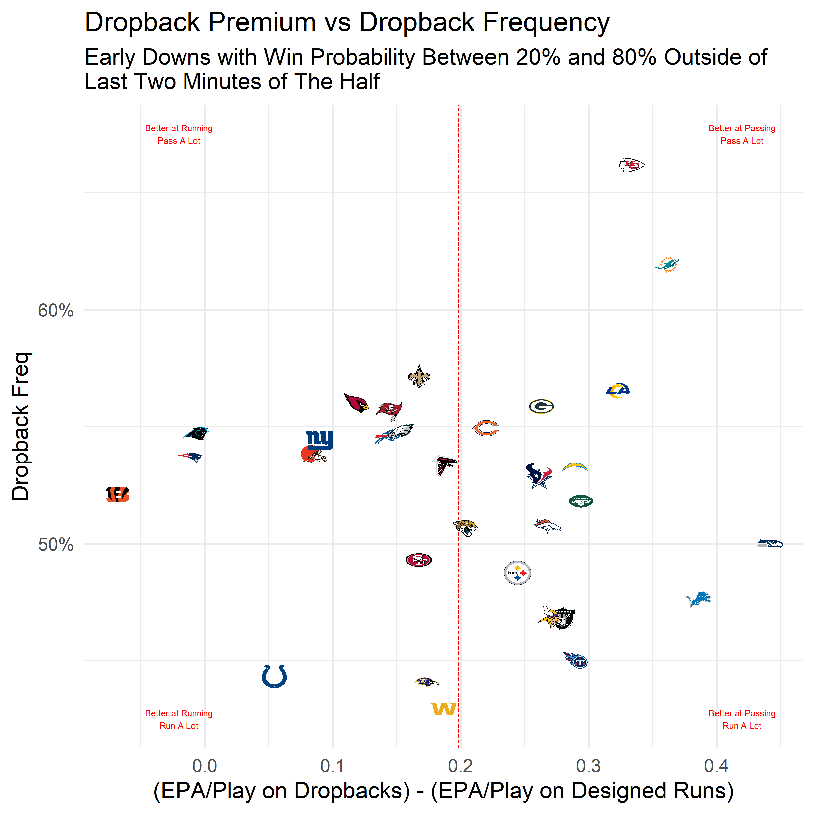
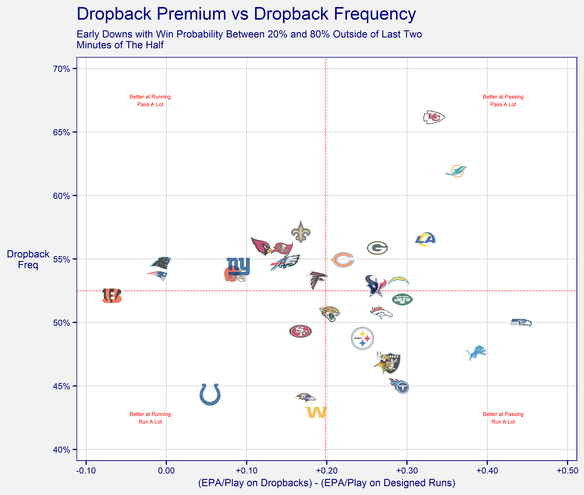

Using nflfastR data to show how much more efficient passing is than rushing at the team level
The football philosophers of Twitter know that the passing game reigns supreme over the rushing game. As easy as it is to just say this, we need to be able to prove it. We also need to acknowledge that there could come a time where a team is so good at running the ball or so bad at passing that they should be running the ball more often. I thought an easy way to communicate this would be show the difference between a team’s dropback EPA/play and their designed rush EPA/play while also showing how often they attempt to pass.
After we’ve pulled in the 2019 play-by-play data from the nflfastR data repository, we need to start thinking about what cuts of data we should exclude from our sample. I’ve chosen to include only 1st and 2nd down here, as teams are not burdened on these plays with having to advance the ball to the first down marker to keep their drive alive. I’m also going to only include plays where the game was reasonably competitive, which I’m defining here as win probability between 20% and 80%. Lastly, I’m going to remove plays that begin inside the final two minutes of the half, where teams are more likely to be passing (unless they are salting away a lead, of course). Keeping only the plays described above ensures that the offense is not in an obvious passing or running situation.
library(tidyverse)
pbp_df <- readRDS(url("https://raw.githubusercontent.com/guga31bb/nflfastR-data/master/data/play_by_play_2019.rds"))
prem_epa_df <- pbp_df %>%
filter(down <= 2 & wp <= .8 & wp >= .2 & half_seconds_remaining >= 120) %>%
group_by(posteam) %>%
summarize(
pass_freq = mean(pass),
pass_epa = mean(ifelse(pass == 1, epa, NA), na.rm = T),
run_epa = mean(ifelse(rush == 1, epa, NA), na.rm = T),
pass_epa_prem = pass_epa - run_epa
)It doesn’t hurt to label the four corners of the plot so it can be understood more easily. We also want to include some gridlines that show the league averages.
label_df <- data.frame(
pass_freq = c(.675, .425, .675, .425),
pass_epa_prem = c(.42, .42, -.02, -.02),
label = c(
"Better at Passing\nPass A Lot",
"Better at Passing\nRun A Lot",
"Better at Running\nPass A Lot",
"Better at Running\nRun A Lot"
)
)
pbp_df %>%
filter(down <= 2 & wp <= .8 & wp >= .2 & half_seconds_remaining >= 120) %>%
group_by(season) %>%
summarize(
pass_freq = mean(pass),
pass_epa = mean(ifelse(pass == 1, epa, NA), na.rm = T),
run_epa = mean(ifelse(rush == 1, epa, NA), na.rm = T),
pass_epa_prem = pass_epa - run_epa
)
# A tibble: 1 x 5
season pass_freq pass_epa run_epa pass_epa_prem
<int> <dbl> <dbl> <dbl> <dbl>
1 2019 0.524 0.0894 -0.117 0.206We can use this function to turn team abbreviations into the URL needed get high quality logos from ESPN.
ESPN_logo_url <- function(x) paste0("https://a.espncdn.com/i/teamlogos/nfl/500/", x, ".png")I typically make some cosmetic changes to my graphs to make them more visually appealing. If that isn’t your thing, this is the bare bones version.
library(ggimage) # I'm going to use ggimage's geom_image to add team logos here
library(scales) # percent_format will convert the y-axis to percentages
ggplot(data = prem_epa_df, aes(x = pass_epa_prem, y = pass_freq)) +
geom_hline(yintercept = 0.525, color = "red", linetype = "52", size = 0.2) +
geom_vline(xintercept = 0.198, color = "red", linetype = "52", size = 0.2) +
geom_text(data = label_df, aes(label = label), color = "red", size = 1.5) +
geom_image(aes(image = ESPN_logo_url(posteam)), size = 0.04) +
scale_y_continuous(labels = percent_format(accuracy = 1)) +
labs(
title = "Dropback Premium vs Dropback Frequency",
subtitle = "Early Downs with Win Probability Between 20% and 80% Outside of\nLast Two Minutes of The Half",
y = "Dropback Freq",
x = "(EPA/Play on Dropbacks) - (EPA/Play on Designed Runs)"
) +
theme_minimal()
Adding a bunch of junk to this plot will require loading some additional packages…
library(scales) # fixes labels
library(shadowtext) # geom_shadowtext adds a thin border around your text, making it more readable
library(ggpmisc) # geom_grob is my preferred function for placing images on plots
library(grid) # convert an image to a raster object
library(magick) # read our image in so we can make manipulations, if neededI like to use +/- signs for positive & negative sometimes. This function usually gets the job done and can be applied directly to label argument of the axis layer.
plus_lab <- function(x, accuracy = NULL, suffix = "") paste0(ifelse(x > 0, "+", ""), number(x, accuracy = accuracy, suffix = suffix, scale = ifelse(suffix == "%", 100, 1)))
plus_lab_format <- function(accuracy = NULL, suffix = "") function(x) plus_lab(x, accuracy = accuracy, suffix = suffix)This function will take a URL and return a grob with a modified color or transparency. It will produce an image when set as the label aesthetic for geom_grob. Processing graphs takes longer with geom_grob than it does with geom_image, but aspect ratios are always perfect for each image.
grob_img_adj <- function(img_url, alpha = 1, whitewash = 0) {
return(lapply(img_url, function(x) {
if (is.na(x)) {
return(NULL)
} else {
img <- magick::image_read(x)[[1]]
img[1, , ] <- as.raw(255 - (255 - as.integer(img[1, , ])) * (1 - whitewash))
img[2, , ] <- as.raw(255 - (255 - as.integer(img[2, , ])) * (1 - whitewash))
img[3, , ] <- as.raw(255 - (255 - as.integer(img[3, , ])) * (1 - whitewash))
img[4, , ] <- as.raw(as.integer(img[4, , ]) * alpha)
return(grid::rasterGrob(image = magick::image_read(img)))
}
}))
}This is my own personal theme that I use for all my graphs. I typically use a different font, but I’ll use the default here. I’m also going to leave out my personal branding for this one.
theme_SB <- theme(
line = element_line(lineend = "round", color = "darkblue"),
text = element_text(color = "darkblue"),
plot.background = element_rect(fill = "grey95", color = "transparent"),
panel.border = element_rect(color = "darkblue", fill = NA),
panel.background = element_rect(fill = "white", color = "transparent"),
axis.ticks = element_line(color = "darkblue", size = 0.5),
axis.ticks.length = unit(2.75, "pt"),
axis.title = element_text(size = 8),
axis.text = element_text(size = 7, color = "darkblue"),
plot.title = element_text(size = 14),
plot.subtitle = element_text(size = 8),
plot.caption = element_text(size = 5),
legend.background = element_rect(fill = "grey90", color = "darkblue"),
legend.key = element_blank(),
panel.grid.minor = element_blank(),
panel.grid.major = element_line(color = "grey85", size = 0.3),
axis.title.y = element_text(angle = 0, vjust = 0.5),
strip.background = element_blank(),
strip.text = element_text(size = 6, color = "darkblue"),
legend.position = "bottom"
)And here is the final graph!
ggplot(data = prem_epa_df, aes(x = pass_epa_prem, y = pass_freq)) +
geom_hline(yintercept = 0.525, color = "red", linetype = "52", size = 0.2) +
geom_vline(xintercept = 0.198, color = "red", linetype = "52", size = 0.2) +
geom_shadowtext(data = label_df, aes(label = label), color = "red", size = 1.5, bg.color = "white", bg.r = 0.2) +
geom_grob(aes(x = pass_epa_prem, y = pass_freq, label = grob_img_adj(ESPN_logo_url(posteam), alpha = 0.7), vp.height = 0.06)) +
scale_x_continuous(labels = plus_lab_format(accuracy = .01), breaks = seq(-1, 1, .1), limits = c(-0.1, 0.5), expand = expansion(mult = c(0.02, 0.02))) +
scale_y_continuous(labels = percent_format(accuracy = 1), breaks = seq(0, 1, .05), limits = c(.4, .7), expand = expansion(mult = c(0.03, 0.03))) +
labs(
title = "Dropback Premium vs Dropback Frequency",
subtitle = "Early Downs with Win Probability Between 20% and 80% Outside of Last Two\nMinutes of The Half",
y = "Dropback\nFreq",
x = "(EPA/Play on Dropbacks) - (EPA/Play on Designed Runs)"
) +
theme_SB
If you see mistakes or want to suggest changes, please create an issue on the source repository.
For attribution, please cite this work as
Reinhard (2020, Aug. 20). Open Source Football: Visualizing the Run/Pass Efficiency Gap. Retrieved from https://mrcaseb.github.io/open-source-football/posts/2020-08-19-visualizing-the-runpass-efficiency-gap/
BibTeX citation
@misc{reinhard2020visualizing,
author = {Reinhard, Anthony},
title = {Open Source Football: Visualizing the Run/Pass Efficiency Gap},
url = {https://mrcaseb.github.io/open-source-football/posts/2020-08-19-visualizing-the-runpass-efficiency-gap/},
year = {2020}
}